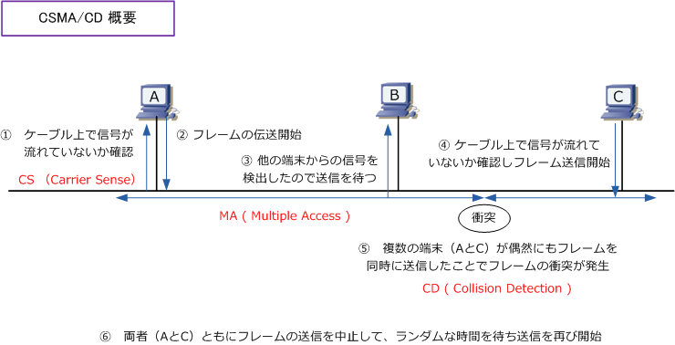
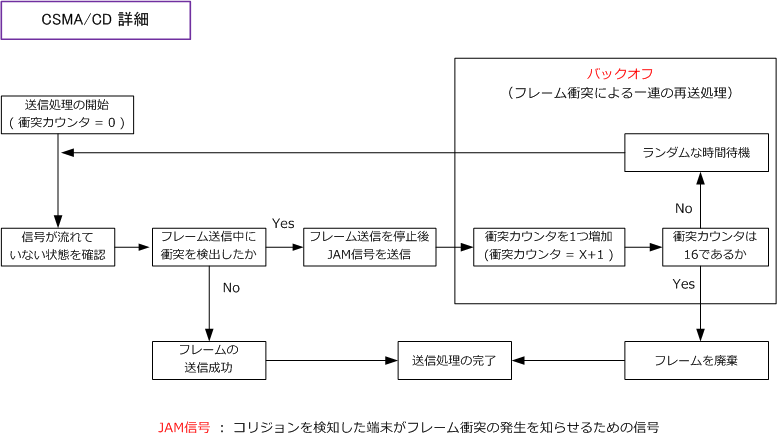
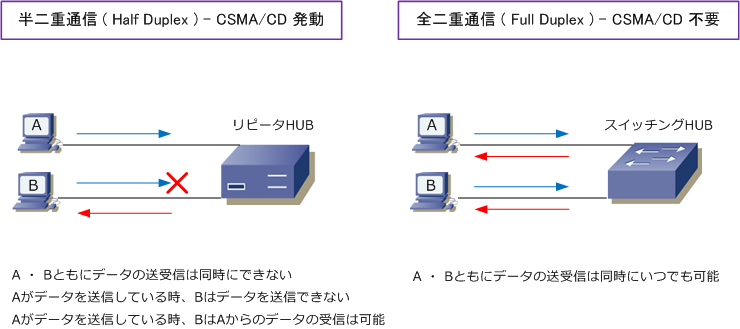

Ethernet LAN - CSMA/CD
CSMA/CDとは
CSMA/CDはCarrier Sense Multiple Access with Collision Detectionの略であり、Ethernetが採用して いる通信方式の1つで、初期イーサネットLANで使用されていたアクセス制御方式。10Base5や10Base2 といった同軸ケーブルを使用したバス型のトポロジーや、10Base-T/100Base-TXのケーブルの場合でも 半二重通信しかサポートしないハブを使用したスター型トポロジーでも、CSMA/CD方式は使用されます。 ※ スイッチの普及や全二重通信が広く採用されている現在のイーサネットLANではCSMA/CD方式の通信はほとんど発生しません。
CSMA/CDの動作
CSMA/CDは要約すると次のような動作をします。イーサネットフレームを伝送したいPC端末はケーブル の通信状況（電気信号の状況）を確認し、フレームが伝送されていなければ自身のフレームを送信します。 複数の端末が同時に送信しデータが衝突すると（コリジョン発生）ある時間を待って送信をやり直します。

信号を感知（Carrier Sense）しフレーム伝送を行い、フレームが衝突を検出（Collision Detection）すると ランダムな時間を待ち送信を開始します。この方法で、1本のケーブル上（1つのネットワークの媒体上）を 複数のノードがお互いにアクセス（Multiple Access）できるようになります。これがCSMA/CD方式です。 以下はフレームが衝突した場合のフローです。バックオフは衝突後、ランダムな待ち時間を置いて再送する処理です。※ バックオフは15回繰り返されて16回目にフレームを廃棄。

このようにあるノードが通信していると他の端末は通信できませんが、これは “ある瞬間” においてなので 人の目からPCの通信状況を見ると、複数の端末が同時に通信できているように見えます。注意事項として CSMA/CDは半二重（half duplex）の通信で使用される通信方式であり、全二重（full duplex）の通信で CSMA/CDは使用されません。スイッチングハブに接続されたノードはいつでもデータの送受信が可能です。
